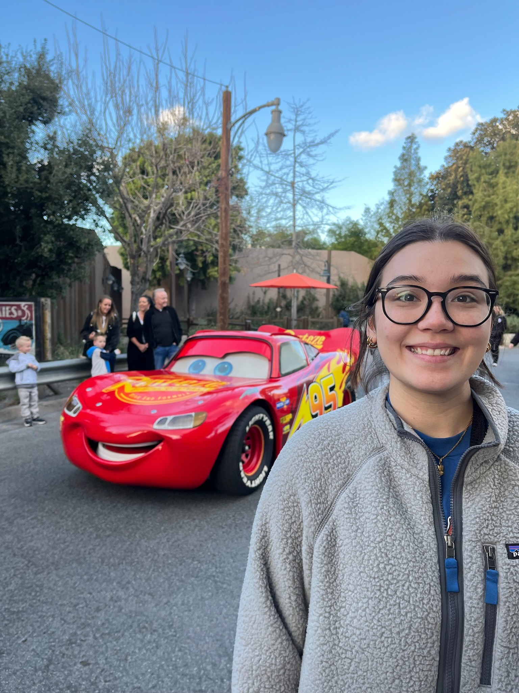

<!-- just code it to show the appropriate divs -->
<!DOCTYPE html>
<html lang="en">

</html>

<head>
    <link rel="stylesheet" href="styles.css">
    <link rel="stylesheet" href="https://cdnjs.cloudflare.com/ajax/libs/font-awesome/6.0.0/css/all.min.css">
    <title>Fullstack Software Engineer Intern!</title>
</head>

<body>
    <section>
        <div style="display: flex; padding-top: 20px;" id="myDIV">
            <a href="index.html#discography">
                <i class="fa-solid fa-backward-step"
                    style="font-size:30px;color:gray; padding-left: 30px; padding-top: 10px; padding-right: 20px;"></i>
            </a>
            
            <div style="padding-left: 25px">
                <h1 style="font-size: 40px; padding-bottom: 20px; padding-top: 50px; color: white;">Undergraduate Researcher</h1>
                <a class="linkUnderline" href="https://web.cs.unlv.edu/stefika/lab.html" target="_blank"><h4 style="color: white;">UNLV Quorum Research Lab</a> · January 2023 - May 2024</h4>
            </div>
        </div>
        <div style="display: flex; padding-top: 30px;">
            <ol class="workList">
                <li>1 Made lessons about the Quorum statistics library for the Quorum website including example code</li>
                <li>2 Implemented a statistical test output window in Quorum IDE</li>
                <li>3 Contributed to Quorum graph accessbility on IOS devices</li>
            </ol>
        </div>

    </section>

</body>